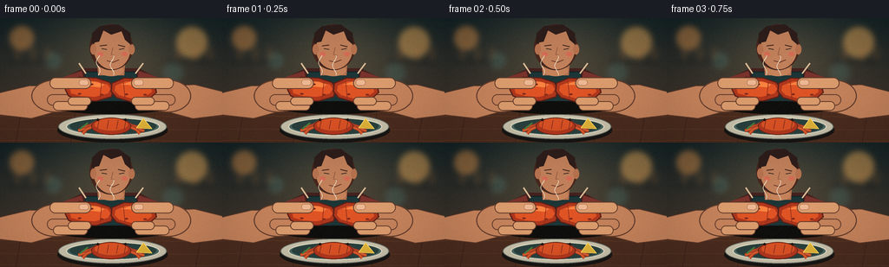
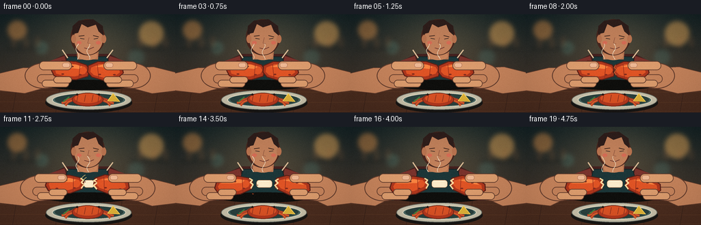

CODING AGENTS AS PIXEL WORLD MODELS
traex/GPT-5.6-Sol · motion_rationality_0014
点击播放 · 原生 RGB 像素
逐轮保存的候选
回放视频、检查图与代码变化。
每份候选均可单独播放。实际图片检查记录在下方工具轨迹中。
候选 01播放与检查图
点击播放 · 原生 RGB 像素


展开代码变化
--- 上一保存版本
+++ 本次保存版本
@@ -0,0 +1,261 @@
+from pathlib import Path
+import math
+import numpy as np
+from PIL import Image, ImageDraw, ImageFilter
+import artifact_io
+
+W,H,N = 256,144,20
+SS=4
+CW,CH=W*SS,H*SS
+
+def sc(v): return int(round(v*SS))
+def box(b): return tuple(sc(x) for x in b)
+def pts(pp): return [(sc(x),sc(y)) for x,y in pp]
+
+def smooth(a,b,x):
+ if x<=a:return 0.0
+ if x>=b:return 1.0
+ q=(x-a)/(b-a); return q*q*(3-2*q)
+
+def poly(draw,p,fill,outline=None,width=1):
+ draw.polygon(pts(p), fill=fill)
+ if outline: draw.line(pts(p+[p[0]]),fill=outline,width=sc(width),joint='curve')
+
+def ellipse(draw,b,fill,outline=None,width=1): draw.ellipse(box(b),fill=fill,outline=outline,width=sc(width))
+def line(draw,p,fill,width=1): draw.line(pts(p),fill=fill,width=sc(width),joint='curve')
+
+def rotated(points, cx, cy, ang, dx=0,dy=0):
+ c,s=math.cos(ang),math.sin(ang); out=[]
+ for x,y in points:
+ x-=cx;y-=cy
+ out.append((cx+x*c-y*s+dx,cy+x*s+y*c+dy))
+ return out
+
+def rounded(draw,b,r,fill,outline=None,width=1): draw.rounded_rectangle(box(b),radius=sc(r),fill=fill,outline=outline,width=sc(width))
+
+def background(frame):
+ # rich restaurant ambience, softly out of focus
+ yy,xx=np.mgrid[0:CH,0:CW]
+ top=np.array([19,34,37.],float); bot=np.array([79,57,43.],float)
+ f=(yy/(CH-1))[...,None]
+ arr=top*(1-f)+bot*f
+ # warm pool of light behind subject
+ glow=np.exp(-(((xx-CW*.52)/(CW*.45))**2+((yy-CH*.28)/(CH*.58))**2)*2.1)[...,None]
+ arr += glow*np.array([38,29,17.])
+ bg=Image.fromarray(np.uint8(np.clip(arr,0,255)),'RGB')
+ d=ImageDraw.Draw(bg,'RGBA')
+ # blurred pendant lamps / kitchen highlights
+ for x,y,r,c in [(25,23,14,(236,155,78,115)),(221,28,18,(252,184,96,120)),(61,49,9,(108,181,164,58)),(199,63,12,(89,162,154,47))]:
+ ellipse(d,(x-r,y-r,x+r,y+r),c)
+ # wall panels and shelf
+ rounded(d,(8,48,65,52),2,(19,25,25,100)); rounded(d,(190,48,247,52),2,(19,25,25,100))
+ for x in [17,35,52,202,222,239]: rounded(d,(x,33,x+6,49),2,(162,106,63,50))
+ bg=bg.filter(ImageFilter.GaussianBlur(sc(3.2)))
+ return bg
+
+def person(draw):
+ # torso and apron behind hands
+ poly(draw,[(63,111),(70,70),(96,58),(160,58),(187,72),(197,111)],(68,34,31,255))
+ # sleeves
+ poly(draw,[(67,70),(94,61),(101,89),(78,102),(57,95)],(122,51,44,255))
+ poly(draw,[(160,61),(187,70),(199,95),(177,101),(154,88)],(122,51,44,255))
+ # apron
+ poly(draw,[(99,62),(156,62),(169,112),(87,112)],(28,54,56,255), (18,34,35,255),1)
+ line(draw,[(99,64),(91,52)],(220,188,150,210),2)
+ line(draw,[(156,64),(165,52)],(220,188,150,210),2)
+ # neck
+ poly(draw,[(112,52),(113,66),(143,66),(144,51)],(181,116,81,255))
+ ellipse(draw,(114,54,142,67),(198,131,91,255))
+ # head
+ ellipse(draw,(103,7,153,60),(72,39,30,255)) # hair silhouette
+ ellipse(draw,(108,12,150,59),(194,129,91,255))
+ # ears
+ ellipse(draw,(104,30,111,42),(185,116,80,255)); ellipse(draw,(148,30,155,42),(185,116,80,255))
+ # hair and fringe
+ poly(draw,[(105,29),(106,17),(115,9),(136,7),(150,17),(151,31),(144,25),(140,15),(128,19),(119,14),(114,27)],(47,30,27,255))
+ # eyebrows and downcast eyes
+ line(draw,[(115,32),(123,31)],(65,40,31,255),1.2); line(draw,[(136,31),(144,33)],(65,40,31,255),1.2)
+ line(draw,[(117,35),(123,36)],(42,33,29,255),1); line(draw,[(137,36),(143,35)],(42,33,29,255),1)
+ # nose, mouth, warm cheek
+ line(draw,[(130,34),(128,42),(132,43)],(137,80,59,210),.8)
+ line(draw,[(123,49),(130,51),(137,48)],(100,49,42,255),1)
+ ellipse(draw,(112,39,119,44),(214,109,85,45));ellipse(draw,(140,39,147,44),(214,109,85,45))
+
+def table_plate(draw):
+ # wooden tabletop
+ poly(draw,[(0,108),(256,108),(256,144),(0,144)],(76,45,31,255))
+ for y in [113,128,141]: line(draw,[(0,y),(256,y+1)],(113,69,42,90),.5)
+ for x in [24,87,178,231]: line(draw,[(x,109),(x-6,144)],(49,30,25,80),.5)
+ # plate shadow and ceramic
+ ellipse(draw,(66,115,193,144),(24,22,20,130))
+ ellipse(draw,(67,111,192,140),(203,196,173,255),(104,111,103,255),1)
+ ellipse(draw,(76,115,184,136),(75,104,99,255),(230,224,199,255),1.2)
+ ellipse(draw,(80,116,180,134),(42,65,62,255))
+ # whole crab on plate, partially occluded later
+ # legs
+ legc=(181,65,37,255); hi=(230,103,49,255)
+ for side in [-1,1]:
+ sx=128+side*17
+ for j,(dy,ex) in enumerate([(0,34),(4,38),(8,33)]):
+ p=[(sx,120+dy*.45),(128+side*(23+j*3),124+dy*.6),(128+side*ex,127+dy*.8)]
+ line(draw,p,legc,4); line(draw,p,hi,1.4)
+ ellipse(draw,(105,115,151,135),(181,57,31,255),(112,39,25,255),1)
+ ellipse(draw,(109,116,147,130),(221,83,37,255))
+ # shell segmented marks/eyes
+ for x in [114,125,136,145]: line(draw,[(x,118),(x-2,128)],(129,44,29,180),.7)
+ ellipse(draw,(111,116,114,119),(41,26,22,255)); ellipse(draw,(143,116,146,119),(41,26,22,255))
+ # parsley/lemon accents
+ poly(draw,[(157,127),(165,116),(175,128)],(226,180,57,255),(255,220,95,255),.7)
+ line(draw,[(92,128),(101,121)],(67,130,62,255),2)
+
+def draw_shell_half(draw, side, dx, angle, crack_open):
+ # horizontal cooked claw/large leg section, transformed around break
+ if side=='L':
+ base=[(75,82),(79,73),(91,68),(111,69),(126,74),(131,81),(128,91),(111,96),(91,95),(79,90)]
+ pivot=(130,82); ang=-angle
+ else:
+ base=[(129,75),(143,69),(163,70),(178,77),(180,86),(171,94),(151,97),(134,92),(128,85)]
+ pivot=(130,82); ang=angle
+ pp=rotated(base,*pivot,ang,dx,0)
+ poly(draw,pp,(174,55,29,255),(91,32,23,255),1.4)
+ # inset orange highlight shape
+ if side=='L': inn=[(80,80),(84,75),(94,72),(110,73),(124,77),(127,82),(124,87),(109,91),(93,90),(82,87)]
+ else: inn=[(133,78),(145,73),(160,74),(173,79),(175,85),(168,90),(152,93),(137,89),(132,84)]
+ poly(draw,rotated(inn,*pivot,ang,dx,0),(224,84,37,255))
+ # highlight band
+ if side=='L': hp=[(85,76),(96,72),(112,74),(120,77),(115,80),(96,78)]
+ else: hp=[(139,77),(151,73),(164,76),(170,79),(160,79),(147,77)]
+ poly(draw,rotated(hp,*pivot,ang,dx,0),(249,132,65,190))
+ # dark shell mottling
+ marks=([(89,86,94,89),(103,75,108,78),(115,87,119,90)] if side=='L' else [(143,86,148,90),(157,76,162,79),(165,87,169,90)])
+ for b in marks:
+ # centers transform, render as small rotated-independent ovals
+ x=(b[0]+b[2])/2;y=(b[1]+b[3])/2
+ tx,ty=rotated([(x,y)],*pivot,ang,dx,0)[0]
+ ellipse(draw,(tx-2,ty-1,tx+2,ty+1),(133,44,29,145))
+ # ridged shell bands
+ bx=117 if side=='L' else 142
+ p1=rotated([(bx,73),(bx-2 if side=='L' else bx+2,93)],*pivot,ang,dx,0)
+ line(draw,p1,(141,44,27,150),.8)
+ # broken white inner rim after separation
+ if crack_open>0:
+ if side=='L': edge=[(127,75),(131,78),(128,81),(131,85),(127,90)]
+ else: edge=[(132,76),(128,79),(132,82),(128,86),(133,91)]
+ line(draw,rotated(edge,*pivot,ang,dx,0),(255,216,157,255),2.2)
+
+def finger(draw,b,fill=(202,137,96,255),outline=(105,64,48,255),w=1):
+ rounded(draw,b,(b[3]-b[1])/2,fill,outline,w)
+
+def hands(draw,t,split):
+ # Hands follow shell halves. During squeeze they shift inward, then separate.
+ press=2.3*smooth(0,6,t)
+ lx=-split+press; rx=split-press
+ skin=(199,132,92,255); skinlight=(221,157,110,255); edge=(100,61,45,255)
+ # forearms behind palms
+ poly(draw,[(-8,88),(34,78),(69+lx,79),(72+lx,106),(36,116),(-8,111)],skin,edge,1)
+ poly(draw,[(264,87),(224,77),(188+rx,79),(185+rx,106),(222,116),(264,111)],skin,edge,1)
+ # palms
+ ellipse(draw,(36+lx,71,92+lx,109),skin,edge,1.2)
+ ellipse(draw,(166+rx,71,220+rx,109),skin,edge,1.2)
+ # lower fingers curled around shell (behind and then visible below)
+ finger(draw,(54+lx,89,91+lx,101),skin,edge)
+ finger(draw,(61+lx,96,101+lx,107),skinlight,edge)
+ finger(draw,(165+rx,89,203+rx,101),skin,edge)
+ finger(draw,(156+rx,96,196+rx,107),skinlight,edge)
+ # top thumbs crossing the claw, key grasp cue
+ finger(draw,(57+lx,69,105+lx,82),skinlight,edge,1.1)
+ finger(draw,(151+rx,69,200+rx,82),skinlight,edge,1.1)
+ # thumbnails
+ rounded(draw,(91+lx,71.3,102+lx,77.8),3,(237,182,145,255),(167,105,81,210),.6)
+ rounded(draw,(154+rx,71.3,165+rx,77.8),3,(237,182,145,255),(167,105,81,210),.6)
+ # knuckle highlights and creases
+ line(draw,[(42+lx,85),(51+lx,83)],(235,174,126,120),1)
+ line(draw,[(214+rx,85),(205+rx,83)],(235,174,126,120),1)
+ line(draw,[(67+lx,103),(75+lx,101)],(130,76,56,130),.7)
+ line(draw,[(189+rx,103),(181+rx,101)],(130,76,56,130),.7)
+
+def render(i):
+ t=float(i)
+ im=background(i).convert('RGBA'); d=ImageDraw.Draw(im,'RGBA')
+ person(d); table_plate(d)
+ # timeline: squeeze -> visible fracture -> decisive opening
+ openp=smooth(8.0,14.0,t)
+ split=18*openp
+ angle=math.radians(8.5*openp)
+ # shadow under elevated claw
+ ellipse(d,(67-split*.25,96,190+split*.25,111),(15,15,13,int(70-20*openp)))
+ # hands rear components need to frame object; draw palms/wrists first in custom layering
+ # Main rear hand masses
+ press=2.3*smooth(0,6,t); lx=-split+press; rx=split-press
+ skin=(199,132,92,255); edge=(100,61,45,255)
+ poly(d,[(-8,88),(34,78),(69+lx,79),(72+lx,106),(36,116),(-8,111)],skin,edge,1)
+ poly(d,[(264,87),(224,77),(188+rx,79),(185+rx,106),(222,116),(264,111)],skin,edge,1)
+ ellipse(d,(36+lx,71,92+lx,109),skin,edge,1.2); ellipse(d,(166+rx,71,220+rx,109),skin,edge,1.2)
+ # bottom/back fingers before shell
+ finger(d,(54+lx,88,94+lx,101),skin,edge); finger(d,(61+lx,96,101+lx,107),(221,157,110,255),edge)
+ finger(d,(162+rx,88,202+rx,101),skin,edge); finger(d,(155+rx,96,195+rx,107),(221,157,110,255),edge)
+ # exposed crab meat bridges the opening, behind shell rims
+ if openp>.05:
+ gap=split*1.18
+ # fibrous lump and strand centered, grows visible as halves part
+ rounded(d,(126-gap*.35,78,134+gap*.35,89),4,(250,231,196,255),(178,115,77,255),.6)
+ for k in range(4):
+ yy=80+k*2.2
+ line(d,[(127-gap*.28,yy),(131+gap*.28,yy+math.sin(k)*.7)],(255,248,221,210),.7)
+ draw_shell_half(d,'L',-split,angle,openp)
+ draw_shell_half(d,'R',split,angle,openp)
+ # fracture before opening: dark jagged seam grows down the shell
+ fracture=smooth(4.5,8.5,t)
+ if fracture>0 and openp<.45:
+ yend=75+17*fracture
+ crack=[(130,74),(127.8,78),(131.1,81),(128.2,85),(131,89),(129,93)]
+ crack=[p for p in crack if p[1]<=yend]
+ if len(crack)>1:
+ line(d,crack,(66,29,22,235),1.25)
+ line(d,[(x+.8,y) for x,y in crack],(250,154,79,120),.45)
+ # top thumbs and forefingers overlay shell to show firm grasp
+ skinlight=(221,157,110,255)
+ finger(d,(57+lx,68.5,105+lx,81.7),skinlight,edge,1.1)
+ finger(d,(151+rx,68.5,200+rx,81.7),skinlight,edge,1.1)
+ rounded(d,(91+lx,71.1,102+lx,77.7),3,(238,184,147,255),(165,102,79,210),.6)
+ rounded(d,(154+rx,71.1,165+rx,77.7),3,(238,184,147,255),(165,102,79,210),.6)
+ # index fingertip hooks near lower shell edges
+ finger(d,(78+lx,91,105+lx,101),skinlight,edge,.9)
+ finger(d,(151+rx,91,178+rx,101),skinlight,edge,.9)
+ # shell chips only at the instant of cracking, ballistic then falling
+ if 9<=t<=14:
+ q=t-9
+ chips=[(-1,0,1.2),(1,1,1.0),(-.6,1.5,.8)]
+ for j,(sx,sy,r) in enumerate(chips):
+ x=130+sx*(5+q*2.3); y=81-sy*q*2+0.65*q*q+j*1.2
+ tri=[(x-r,y),(x+r,y+.7*r),(x-.3*r,y+1.7*r)]
+ poly(d,tri,(229,105,49,255),(104,42,26,255),.4)
+ # subtle steam curls
+ for j in range(2):
+ off=j*16
+ path=[]
+ for k in range(12):
+ y=66-k*2.1; x=113+off+math.sin(k*.65+i*.18+j)*2.2
+ path.append((x,y))
+ line(d,path,(240,225,198,35),.8)
+ # focus cue around break after snap
+ if 9<=t<=11:
+ a=int(110*(1-abs(t-10)/2))
+ for r in [9,13]:
+ d.arc(box((130-r,82-r,130+r,82+r)),200,245,fill=(255,210,124,a),width=sc(.7))
+ # downsample, grade and texture
+ im=im.convert('RGB').resize((W,H),Image.Resampling.LANCZOS)
+ arr=np.asarray(im).astype(np.float32)
+ # fixed fine film grain, frame-varying but subtle
+ rng=np.random.default_rng(8100+i)
+ arr += rng.normal(0,1.2,arr.shape[:2])[...,None]
+ # vignette
+ yy,xx=np.mgrid[0:H,0:W]; v=1-0.16*np.clip(((xx-W/2)/(W*.7))**2+((yy-H/2)/(H*.7))**2,0,1)
+ arr*=v[...,None]
+ return np.uint8(np.clip(arr,0,255))
+
+def main():
+ frames=np.stack([render(i) for i in range(N)])
+ artifact_io.save(frames,Path(__file__).resolve().parent)
+
+if __name__=='__main__': main()
可观测工具轨迹
实际执行的命令与返回图片。
命令 1exit 0
/bin/bash -lc "cat prompt.txt && printf '\\n--- RULES ---\\n' && cat GENERATION_RULES.md && printf '\\n--- SPEC ---\\n' && cat task_spec.json"
命令 2exit 0
/bin/bash -lc "find . -maxdepth 2 -type f -printf '%p\\n' | sort | head -200"
命令 3exit 0
/bin/bash -lc "sed -n '1,240p' artifact_io.py"
命令 4exit 0
/bin/bash -lc "python - <<'PY'
import PIL, numpy
print('PIL',PIL.__version__,'numpy',numpy.__version__)
PY"命令 5exit 0
/bin/bash -lc "cat > generate.py <<'PY'
from pathlib import Path
import math
import numpy as np
from PIL import Image, ImageDraw, ImageFilter
import artifact_io
W,H,N = 256,144,20
SS=4
CW,CH=W*SS,H*SS
def sc(v): return int(round(v*SS))
def box(b): return tuple(sc(x) for x in b)
def pts(pp): return [(sc(x),sc(y)) for x,y in pp]
def smooth(a,b,x):
if x<=a:return 0.0
if x>=b:return 1.0
q=(x-a)/(b-a); return q*q*(3-2*q)
def poly(draw,p,fill,outline=None,width=1):
draw.polygon(pts(p), fill=fill)
if outline: draw.line(pts(p+[p[0]]),fill=outline,width=sc(width),joint='curve')
def ellipse(draw,b,fill,outline=None,width=1): draw.ellipse(box(b),fill=fill,outline=outline,width=sc(width))
def line(draw,p,fill,width=1): draw.line(pts(p),fill=fill,width=sc(width),joint='curve')
def rotated(points, cx, cy, ang, dx=0,dy=0):
c,s=math.cos(ang),math.sin(ang); out=[]
for x,y in points:
x-=cx;y-=cy
out.append((cx+x*c-y*s+dx,cy+x*s+y*c+dy))
return out
def rounded(draw,b,r,fill,outline=None,width=1): draw.rounded_rectangle(box(b),radius=sc(r),fill=fill,outline=outline,width=sc(width))
def background(frame):
# rich restaurant ambience, softly out of focus
yy,xx=np.mgrid[0:CH,0:CW]
top=np.array([19,34,37.],float); bot=np.array([79,57,43.],float)
f=(yy/(CH-1))[...,None]
arr=top*(1-f)+bot*f
# warm pool of light behind subject
glow=np.exp(-(((xx-CW*.52)/(CW*.45))**2+((yy-CH*.28)/(CH*.58))**2)*2.1)[...,None]
arr += glow*np.array([38,29,17.])
bg=Image.fromarray(np.uint8(np.clip(arr,0,255)),'RGB')
d=ImageDraw.Draw(bg,'RGBA')
# blurred pendant lamps / kitchen highlights
for x,y,r,c in [(25,23,14,(236,155,78,115)),(221,28,18,(252,184,96,120)),(61,49,9,(108,181,164,58)),(199,63,12,(89,162,154,47))]:
ellipse(d,(x-r,y-r,x+r,y+r),c)
# wall panels and shelf
rounded(d,(8,48,65,52),2,(19,25,25,100)); rounded(d,(190,48,247,52),2,(19,25,25,100))
for x in [17,35,52,202,222,239]: rounded(d,(x,33,x+6,49),2,(162,106,63,50))
bg=bg.filter(ImageFilter.GaussianBlur(sc(3.2)))
return bg
def person(draw):
# torso and apron behind hands
poly(draw,[(63,111),(70,70),(96,58),(160,58),(187,72),(197,111)],(68,34,31,255))
# sleeves
poly(draw,[(67,70),(94,61),(101,89),(78,102),(57,95)],(122,51,44,255))
poly(draw,[(160,61),(187,70),(199,95),(177,101),(154,88)],(122,51,44,255))
# apron
poly(draw,[(99,62),(156,62),(169,112),(87,112)],(28,54,56,255), (18,34,35,255),1)
line(draw,[(99,64),(91,52)],(220,188,150,210),2)
line(draw,[(156,64),(165,52)],(220,188,150,210),2)
# neck
poly(draw,[(112,52),(113,66),(143,66),(144,51)],(181,116,81,255))
ellipse(draw,(114,54,142,67),(198,131,91,255))
# head
ellipse(draw,(103,7,153,60),(72,39,30,255)) # hair silhouette
ellipse(draw,(108,12,150,59),(194,129,91,255))
# ears
ellipse(draw,(104,30,111,42),(185,116,80,255)); ellipse(draw,(148,30,155,42),(185,116,80,255))
# hair and fringe
poly(draw,[(105,29),(106,17),(115,9),(136,7),(150,17),(151,31),(144,25),(140,15),(128,19),(119,14),(114,27)],(47,30,27,255))
# eyebrows and downcast eyes
line(draw,[(115,32),(123,31)],(65,40,31,255),1.2); line(draw,[(136,31),(144,33)],(65,40,31,255),1.2)
line(draw,[(117,35),(123,36)],(42,33,29,255),1); line(draw,[(137,36),(143,35)],(42,33,29,255),1)
# nose, mouth, warm cheek
line(draw,[(130,34),(128,42),(132,43)],(137,80,59,210),.8)
line(draw,[(123,49),(130,51),(137,48)],(100,49,42,255),1)
ellipse(draw,(112,39,119,44),(214,109,85,45));ellipse(draw,(140,39,147,44),(214,109,85,45))
def table_plate(draw):
# wooden tabletop
poly(draw,[(0,108),(256,108),(256,144),(0,144)],(76,45,31,255))
for y in [113,128,141]: line(draw,[(0,y),(256,y+1)],(113,69,42,90),.5)
for x in [24,87,178,231]: line(draw,[(x,109),(x-6,144)],(49,30,25,80),.5)
# plate shadow and ceramic
ellipse(draw,(66,115,193,144),(24,22,20,130))
ellipse(draw,(67,111,192,140),(203,196,173,255),(104,111,103,255),1)
ellipse(draw,(76,115,184,136),(75,104,99,255),(230,224,199,255),1.2)
ellipse(draw,(80,116,180,134),(42,65,62,255))
# whole crab on plate, partially occluded later
# legs
legc=(181,65,37,255); hi=(230,103,49,255)
for side in [-1,1]:
sx=128+side*17
for j,(dy,ex) in enumerate([(0,34),(4,38),(8,33)]):
p=[(sx,120+dy*.45),(128+side*(23+j*3),124+dy*.6),(128+side*ex,127+dy*.8)]
line(draw,p,legc,4); line(draw,p,hi,1.4)
ellipse(draw,(105,115,151,135),(181,57,31,255),(112,39,25,255),1)
ellipse(draw,(109,116,147,130),(221,83,37,255))
# shell segmented marks/eyes
for x in [114,125,136,145]: line(draw,[(x,118),(x-2,128)],(129,44,29,180),.7)
ellipse(draw,(111,116,114,119),(41,26,22,255)); ellipse(draw,(143,116,146,119),(41,26,22,255))
# parsley/lemon accents
poly(draw,[(157,127),(165,116),(175,128)],(226,180,57,255),(255,220,95,255),.7)
line(draw,[(92,128),(101,121)],(67,130,62,255),2)
def draw_shell_half(draw, side, dx, angle, crack_open):
# horizontal cooked claw/large leg section, transformed around break
if side=='L':
base=[(75,82),(79,73),(91,68),(111,69),(126,74),(131,81),(128,91),(111,96),(91,95),(79,90)]
pivot=(130,82); ang=-angle
else:
base=[(129,75),(143,69),(163,70),(178,77),(180,86),(171,94),(151,97),(134,92),(128,85)]
pivot=(130,82); ang=angle
pp=rotated(base,*pivot,ang,dx,0)
poly(draw,pp,(174,55,29,255),(91,32,23,255),1.4)
# inset orange highlight shape
if side=='L': inn=[(80,80),(84,75),(94,72),(110,73),(124,77),(127,82),(124,87),(109,91),(93,90),(82,87)]
else: inn=[(133,78),(145,73),(160,74),(173,79),(175,85),(168,90),(152,93),(137,89),(132,84)]
poly(draw,rotated(inn,*pivot,ang,dx,0),(224,84,37,255))
# highlight band
if side=='L': hp=[(85,76),(96,72),(112,74),(120,77),(115,80),(96,78)]
else: hp=[(139,77),(151,73),(164,76),(170,79),(160,79),(147,77)]
poly(draw,rotated(hp,*pivot,ang,dx,0),(249,132,65,190))
# dark shell mottling
marks=([(89,86,94,89),(103,75,108,78),(115,87,119,90)] if side=='L' else [(143,86,148,90),(157,76,162,79),(165,87,169,90)])
for b in marks:
# centers transform, render as small rotated-independent ovals
x=(b[0]+b[2])/2;y=(b[1]+b[3])/2
tx,ty=rotated([(x,y)],*pivot,ang,dx,0)[0]
ellipse(draw,(tx-2,ty-1,tx+2,ty+1),(133,44,29,145))
# ridged shell bands
bx=117 if side=='L' else 142
p1=rotated([(bx,73),(bx-2 if side=='L' else bx+2,93)],*pivot,ang,dx,0)
line(draw,p1,(141,44,27,150),.8)
# broken white inner rim after separation
if crack_open>0:
if side=='L': edge=[(127,75),(131,78),(128,81),(131,85),(127,90)]
else: edge=[(132,76),(128,79),(132,82),(128,86),(133,91)]
line(draw,rotated(edge,*pivot,ang,dx,0),(255,216,157,255),2.2)
def finger(draw,b,fill=(202,137,96,255),outline=(105,64,48,255),w=1):
rounded(draw,b,(b[3]-b[1])/2,fill,outline,w)
def hands(draw,t,split):
# Hands follow shell halves. During squeeze they shift inward, then separate.
press=2.3*smooth(0,6,t)
lx=-split+press; rx=split-press
skin=(199,132,92,255); skinlight=(221,157,110,255); edge=(100,61,45,255)
# forearms behind palms
poly(draw,[(-8,88),(34,78),(69+lx,79),(72+lx,106),(36,116),(-8,111)],skin,edge,1)
poly(draw,[(264,87),(224,77),(188+rx,79),(185+rx,106),(222,116),(264,111)],skin,edge,1)
# palms
ellipse(draw,(36+lx,71,92+lx,109),skin,edge,1.2)
ellipse(draw,(166+rx,71,220+rx,109),skin,edge,1.2)
# lower fingers curled around shell (behind and then visible below)
finger(draw,(54+lx,89,91+lx,101),skin,edge)
finger(draw,(61+lx,96,101+lx,107),skinlight,edge)
finger(draw,(165+rx,89,203+rx,101),skin,edge)
finger(draw,(156+rx,96,196+rx,107),skinlight,edge)
# top thumbs crossing the claw, key grasp cue
finger(draw,(57+lx,69,105+lx,82),skinlight,edge,1.1)
finger(draw,(151+rx,69,200+rx,82),skinlight,edge,1.1)
# thumbnails
rounded(draw,(91+lx,71.3,102+lx,77.8),3,(237,182,145,255),(167,105,81,210),.6)
rounded(draw,(154+rx,71.3,165+rx,77.8),3,(237,182,145,255),(167,105,81,210),.6)
# knuckle highlights and creases
line(draw,[(42+lx,85),(51+lx,83)],(235,174,126,120),1)
line(draw,[(214+rx,85),(205+rx,83)],(235,174,126,120),1)
line(draw,[(67+lx,103),(75+lx,101)],(130,76,56,130),.7)
line(draw,[(189+rx,103),(181+rx,101)],(130,76,56,130),.7)
def render(i):
t=float(i)
im=background(i).convert('RGBA'); d=ImageDraw.Draw(im,'RGBA')
person(d); table_plate(d)
# timeline: squeeze -> visible fracture -> decisive opening
openp=smooth(8.0,14.0,t)
split=18*openp
angle=math.radians(8.5*openp)
# shadow under elevated claw
ellipse(d,(67-split*.25,96,190+split*.25,111),(15,15,13,int(70-20*openp)))
# hands rear components need to frame object; draw palms/wrists first in custom layering
# Main rear hand masses
press=2.3*smooth(0,6,t); lx=-split+press; rx=split-press
skin=(199,132,92,255); edge=(100,61,45,255)
poly(d,[(-8,88),(34,78),(69+lx,79),(72+lx,106),(36,116),(-8,111)],skin,edge,1)
poly(d,[(264,87),(224,77),(188+rx,79),(185+rx,106),(222,116),(264,111)],skin,edge,1)
ellipse(d,(36+lx,71,92+lx,109),skin,edge,1.2); ellipse(d,(166+rx,71,220+rx,109),skin,edge,1.2)
# bottom/back fingers before shell
finger(d,(54+lx,88,94+lx,101),skin,edge); finger(d,(61+lx,96,101+lx,107),(221,157,110,255),edge)
finger(d,(162+rx,88,202+rx,101),skin,edge); finger(d,(155+rx,96,195+rx,107),(221,157,110,255),edge)
# exposed crab meat bridges the opening, behind shell rims
if openp>.05:
gap=split*1.18
# fibrous lump and strand centered, grows visible as halves part
rounded(d,(126-gap*.35,78,134+gap*.35,89),4,(250,231,196,255),(178,115,77,255),.6)
for k in range(4):
yy=80+k*2.2
line(d,[(127-gap*.28,yy),(131+gap*.28,yy+math.sin(k)*.7)],(255,248,221,210),.7)
draw_shell_half(d,'L',-split,angle,openp)
draw_shell_half(d,'R',split,angle,openp)
# fracture before opening: dark jagged seam grows down the shell
fracture=smooth(4.5,8.5,t)
if fracture>0 and openp<.45:
yend=75+17*fracture
crack=[(130,74),(127.8,78),(131.1,81),(128.2,85),(131,89),(129,93)]
crack=[p for p in crack if p[1]<=yend]
if len(crack)>1:
line(d,crack,(66,29,22,235),1.25)
line(d,[(x+.8,y) for x,y in crack],(250,154,79,120),.45)
# top thumbs and forefingers overlay shell to show firm grasp
skinlight=(221,157,110,255)
finger(d,(57+lx,68.5,105+lx,81.7),skinlight,edge,1.1)
finger(d,(151+rx,68.5,200+rx,81.7),skinlight,edge,1.1)
rounded(d,(91+lx,71.1,102+lx,77.7),3,(238,184,147,255),(165,102,79,210),.6)
rounded(d,(154+rx,71.1,165+rx,77.7),3,(238,184,147,255),(165,102,79,210),.6)
# index fingertip hooks near lower shell edges
finger(d,(78+lx,91,105+lx,101),skinlight,edge,.9)
finger(d,(151+rx,91,178+rx,101),skinlight,edge,.9)
# shell chips only at the instant of cracking, ballistic then falling
if 9<=t<=14:
q=t-9
chips=[(-1,0,1.2),(1,1,1.0),(-.6,1.5,.8)]
for j,(sx,sy,r) in enumerate(chips):
x=130+sx*(5+q*2.3); y=81-sy*q*2+0.65*q*q+j*1.2
tri=[(x-r,y),(x+r,y+.7*r),(x-.3*r,y+1.7*r)]
poly(d,tri,(229,105,49,255),(104,42,26,255),.4)
# subtle steam curls
for j in range(2):
off=j*16
path=[]
for k in range(12):
y=66-k*2.1; x=113+off+math.sin(k*.65+i*.18+j)*2.2
path.append((x,y))
line(d,path,(240,225,198,35),.8)
# focus cue around break after snap
if 9<=t<=11:
a=int(110*(1-abs(t-10)/2))
for r in [9,13]:
d.arc(box((130-r,82-r,130+r,82+r)),200,245,fill=(255,210,124,a),width=sc(.7))
# downsample, grade and texture
im=im.convert('RGB').resize((W,H),Image.Resampling.LANCZOS)
arr=np.asarray(im).astype(np.float32)
# fixed fine film grain, frame-varying but subtle
rng=np.random.default_rng(8100+i)
arr += rng.normal(0,1.2,arr.shape[:2])[...,None]
# vignette
yy,xx=np.mgrid[0:H,0:W]; v=1-0.16*np.clip(((xx-W/2)/(W*.7))**2+((yy-H/2)/(H*.7))**2,0,1)
arr*=v[...,None]
return np.uint8(np.clip(arr,0,255))
def main():
frames=np.stack([render(i) for i in range(N)])
artifact_io.save(frames,Path(__file__).resolve().parent)
if __name__=='__main__': main()
PY
python generate.py
ls -lh pixels.npz inspection.png index.html frames/00.png frames/19.png"命令 6exit 0
/bin/bash -lc "python - <<'PY'
import numpy as np
from PIL import Image
p=np.load('pixels.npz')['pixels']
print('packed tensor:',p.shape,p.dtype)
fs=np.stack([np.array(Image.open(f'frames/{i:02d}.png')) for i in range(20)])
print('frames:',fs.shape,fs.dtype,'range',fs.min(),fs.max())
print('mean abs frame deltas:',np.round(np.abs(np.diff(fs.astype(float),axis=0)).mean((1,2,3)),2).tolist())
assert fs.shape==(20,144,256,3) and fs.dtype==np.uint8
assert all(np.any(fs[i]"'!=fs[i-1]) for i in range(1,20))
PY'视觉工具实际返回图片 1

保存候选 1 份；完成命令 6 次；可验证图片返回 1 张。原始 API 响应与完整日志保留在本地。